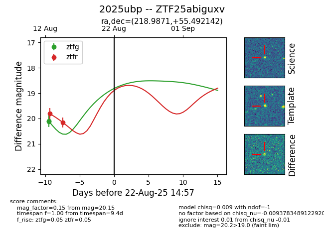

Target 2025ubp at 2025-08-21 09:16, see:
FINK: fink-portal.org/ZTF25abiguxv
Lasair: lasair-ztf.lsst.ac.uk/objects/ZTF25abiguxv
ALeRCE: alerce.online/object/ZTF25abiguxv
TNS: wis-tns.org/object/2025ubp
YSE: ziggy.ucolick.org/yse/transient_detail/2025ubp
alt names
ZTF25abiguxv (ztf,alerce)
2025ubp (tns,yse)
coordinates:
equatorial (ra, dec) = (218.9871,+55.49214)
galactic (l, b) = (96.4816,+55.93752)
photometry
last ztfg=20.13, ztfr=20.15
2 ztfg, 2 ztfr detections
